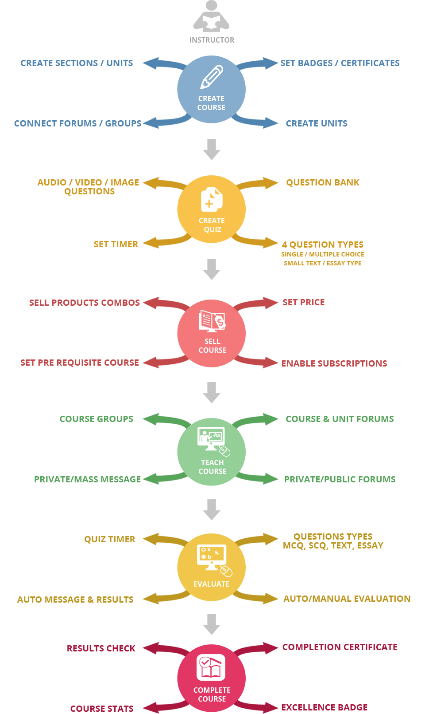

Instructor in WPLMS has a lot of controls and access rights. Below flowchart depicts the various functions of the Instructor.

An Instructor is a user who creates the courses, manages the courses and students.
Instructor
An Instructor by default gets access to a lot of features in the sites. Like viewing all Questions in the question bank, viewing all units in the directory through the admin panel.
Instrctor however can not edit or delete the contents from Units created by other Instructors.
An Instructor can not manually assign badges and certificates to students who are not taking the course.
Group Admin
An instructor is also the Group Admin of the groups connected to Courses published by him. An Instructor therefore can Add or Remove any student from the Group. An Instructor can also assign some students as Group Moderators for efficient functioning of the group.
Forum Admin
Just like the groups, an Instructor is the Forum administrator for the Forum Connected to the Course.
An Instructor can delete any sub-forum, topic in the Course forum.
An Instructor can ban any user in her forum.
Only an Instructor or Administrator can create Courses in WPLMS
Creating Units
Units are the most basic elements in a course. Follow the steps to create a new unit.
Adding a New Unit
- Login to Admin Panel
- Go to LMS section and click on All Units.
- Now click on Add New
- Now fill in the details like Unit Name in the heading of the post, and the unit content in the editor area. The editor area is same as that for posts, pages and supports WordPress native audio and videos [Learn more+].
Unit Settings
- Unit Description: Enter a small gist/description of the unit here. The description comes below the heading of the Unit.
- Unit Type: Select unit type from General(Simple Text Unit) , Audio, Video or Podcast. Selecting the unit type comes handy in course curriculum where the unit icons are shown based on this selection i.e. in case of a video unit, a video icon will be shown along with the unit name in the course curriculum.
- Free Unit: Select Free Unit Show or Hide. Show option makes the Unit as free and allow users to see the unit for non logged in users before purchasing the course.
- Unit Duration: Enter the estimate of the duration of the course in Minutes.
- Unit Forum: BbPress Forum can be connected to an individual unit from here. Select the Unit forum or Course Forum or any other forum instructor wish to connect with this Unit. Forums are useful for instructor and students interaction, clearing the doubts and creating a social connection within the group opting the course.
Unit Attachments
Unit Attachments are downloadable data attached to a unit which the students can download. These attachments are shown at the bottom of the unit. An attachment could be a video, audio, pdf, doc or a zip file. Follow below steps to add attachments to a unit.
- Click on Add Media button in the Unit.
- Upload the Attachment files. Learn more
- Unit will now automatically detect the attached files and show them below the unit content.
Finishing Unit
- Add the unit tags.
- You can save the unit as draft for future releases or Publish it.
Creating Questions
Question is the most basic elements in a Quiz. Follow the steps to create a new question.
Adding a New Question
- Login to Admin Panel
- Go to LMS section and click on All Questions.
- Now click on Add New button.
- Now fill in the reference name of the question like “Maths Quiz1 Question1″ etc, naming your question helps in putting up questions together while making a quiz. After naming, enter the question in the editor area.
Question Settings
- Question Type: Select question type here. You can select from Single Choice (Select one from options), Multiple Choice(There can be multiple answers), Small Text(One Word or Sentence), Large Text(Essay Type Questions).
- Question Options : Enter option by clicking on Add More. You can arrange the order of the options by dragging the small arrow button(in blue) on left hand side of the option number.
- Correct Answer: For Single/ Multiple choice, enter the correct answer choice number and separated by comma in case of multiple answers. In case of Small Text, enter the full complete answer in the space given. This would help the instructor to evaluate quiz after it is completed and submitted by the student.
Finishing Question
- Add tags to the question
- Publish
Creating Quizes
Quiz is made up of questions. Instructor can place quiz anywhere inside the course, be it after each unit or after the completion of all the units or both. Follow the steps to create a new quiz.
Adding a New Quiz
- Login to Admin Panel
- Go to LMS section and click on All Quizzes.
- Now click on Add New
- Now fill in the details like Quiz Name in the heading of the post, and the instructions or any other information like type and questions you want to tell users before they head for the quiz in the editor area. The editor area is same as that for posts, pages and supports WordPress native audio and videos [Learn more+].
Question Settings
- Quiz Subtitle: Enter a subtitle of the quiz here. The description comes below the Quiz name.
- Quiz Duration: Select the total duration of the quiz in minutes. The time will set accordingly in the timer.
- Send notification upon evaluation: Once the quiz has been evaluated by the instructor, if set show it will automatically send message to the students that the quiz has been evaluated and the results are available.
- Post Quiz Message: The message box appears after the quiz has been completed by the students.
- Quiz questions: Add the quiz questions here. The question here appears from the All questions that has been created by the instructor. Since the question database is common so the column shows all the questions created by all the instructors. So, it is very important to give a meaningful and identifiable question name while creating a question.
Create Courses
A course is said to be complete after units, quizzes are added to it.Follow the steps to create a course.
Adding a New Course
- Login to Admin Panel
- Go to LMS section and click on All Courses.
- Now click on Add New
- Now fill in the details like Course Name in the heading of the post, and a small description of the what the course is all about in the editor area. The editor area is same as that for posts, pages and supports WordPress native audio and videos [Learn more+].
Course Settings
- Sidebar: Select the sidebar you want to place in the course page. Sidebars are created in the section Appearance->Widgets by the administrator.
- Excellence Badge: The badges are given on completion of the course and after achieving a certain percentage in the quiz i.e. the Badge Percentage which can be adjusted in the next setting. It is not necessary that every course taker will get the badge.
- Badge Percentage: This is the minimum percentage required by the students to have a badge for the course.
- Badge Title: You can set the title for the badge given after completion of the course like for a Maths course, you can set the title as Maths Champion which a student will get only after receiving the Badge Percentage .
- Completion Certificate: If set Show, after the course is completed each student who passes the course will get this certificate of completion which is printable as well as downloadable. You can design the certificate according to your requirements.Follow the tutorial in the relevant section.Even after the course has expired the student can log in and view/print/download her certificate of completion.
- Passing Percentage: The minimum percentage required to pass the course.
- Total Duration of Course: Total duration of the course is the total time for which the student can access the course by logging into the site. After the duration has expired, the user will not be able to view the course content.
- Total Number of Students in Course: Initially while creating the course the number of students is set to 0.
- Course Curriculum: This setting help the instructor to create the curriculum of the course by arranging the units, quiz and categorizing it in sections. Add Section enables the instructor to add a section and name it. Add Unit enables the instructor to add units which has been created earlier. The units can further be arranged under different by dragging and dropping. Add Quiz allows the instructor to add quiz after unit , section or anywhere the instructor wish to place the quiz. All the three i.e Section, Unit, Quiz are draggable and can be arranged likewise.
- Pre required course: This is the pre requisite of doing the course i.e. if some course is selected , then that course must be finished before taking this new course.
- Course Forum: Link here the course with the respective course forum.
- Course Group: Link here the course with the respective course group.
- Course Completion Message: This message would be shown after the completion of the course.
Other Settings
Course Product: After the course has been created here. The course product is made so that the course created is sold as a product in the shop. After the course product is created, we link both course as well as product with each other with the help of this setting.
Excerpt: Add small two line description of the course. This appears below the name of the course.
Finishing Course
- Add featured image to the course in the right hand side of this page. This image is the main image of your course which appears in the course directory, home page etc.
- Add categories to the course.
- Publish the course.
Screenshot Walkthrough
Screenshots Walkthrough
Creating Free Courses
A free course is accessible by all the students
To create a free course or make a course free, the instructor simply needs to switch the Free button "on"
Watch this video tutorial for reference:
Watch this on Quickcast
After creating courses Instructor manages the courses. There are various function available to manage courses in the Theme. A course is Managed from the Admin section in Course page.
Evaluating Quizes
After the Student has submitted the quiz.
The Quiz submissions can be loacted in the Course Admin -> Submissions -> Quiz Submissions section.
If for any reason the Instructor needs to reset the quiz for the user then she can click the Reset Quiz for User option
.
To Evaluate the quiz, Instructor clicks on Evaluate icon and the Evaluation screen opens
Evaluation screen shows, Question , marked answer, correct answer , maximum marks for the question and a textbox for marks and give marks button.
To give marks to each question Instructor enters marks in the textbox and clicks save marks.
Once Instructor has saved marks for all the questions, Instructor can click on Mark quiz as evaluated
As soon as this button is pressed the user gets a notification and message with the Quiz Results.
Evaluating Courses
After the Student has submitted the Course.
The Course submissions can be loacted in the Course Admin -> Submissions -> Course Submissions section.
If for any reason the Instructor needs to reset the course for the user then she can click the Reset Course for User option
.
To Evaluate the course, Instructor clicks on Evaluate icon and the Evaluation screen opens
Evaluation screen shows, the all the units in the course, and their completion status, it also shows the marks obtained in the Quizes in the course.
To give marks to Instructor enters marks from 100 in the marks column and marks Course as evaluated.
As soon as this button is pressed the user gets a notification and message with the Course Results.
If the Course percentage is above Badge percentage then the user recieves a Badge, if the Course percentage is above the passing percentage then the user recieves a completion certificate.
Managing Students
An Instructor can reset the full course for any student. The will have to start the course again from the very begining. This can be done form the Course -> Admin screen.
An Instructor can remove any student from the Course. The student will have to Pruchase the course again to take the course. This can be done form the Course -> Admin screen.
Course Messaging
An Instructor can send mass message to the students taking the course.This can be done form the Course -> Admin -> Members screen.
Statistics play an important role in any LMS. WPLMS covers some of the important stats functions. We're however open to suggestions here.
User Statistics
An Instructor can see any User's stats for her course only.
- To see user stats Instructor needs to go to Single Course -> Admin -> Students/Members
- Click on the Graph Icons to see User Stats
- After Clicking, if the user has finished the course, only the percentage obtained by the user is shown.
- After Clicking, if the user is still taking the course then the course timeline is shown with the unit status and the marks obtained in the Quiz.
Course Statistics
An Instructor can see Course stats for her course only.
Since calculating Statistics for the course is a complex process, statistics for the course needs to be manually activated by clicking the Calculate Stats icon at the bottom of the course stats screen.
- To see Courses stats Instructor needs to go to Single Course -> Admin -> Stats
- If Stats for the course are not calculated or to recalculate the stats the Instructor can simply click on the Calculate Stats icon
- The Course stats then appear on the Course Stats screen.
BuddyPress provides a lot of functionality for interaction among students and instructors.
Groups
Every Course taker is added to the course group. There are many useful plugins which can be installed to increase the usability of Groups in LMS. The plugin Group documents enables the Instructor to upload documents, like assignments for the Course group. This is automatically sent to the full course group.
Forums
With the forum WPLMS get a lot of interaction features. A Private forum conencted to the Group can be made as the Course forum. This makes the Forum an exclusive club for the Course Members.